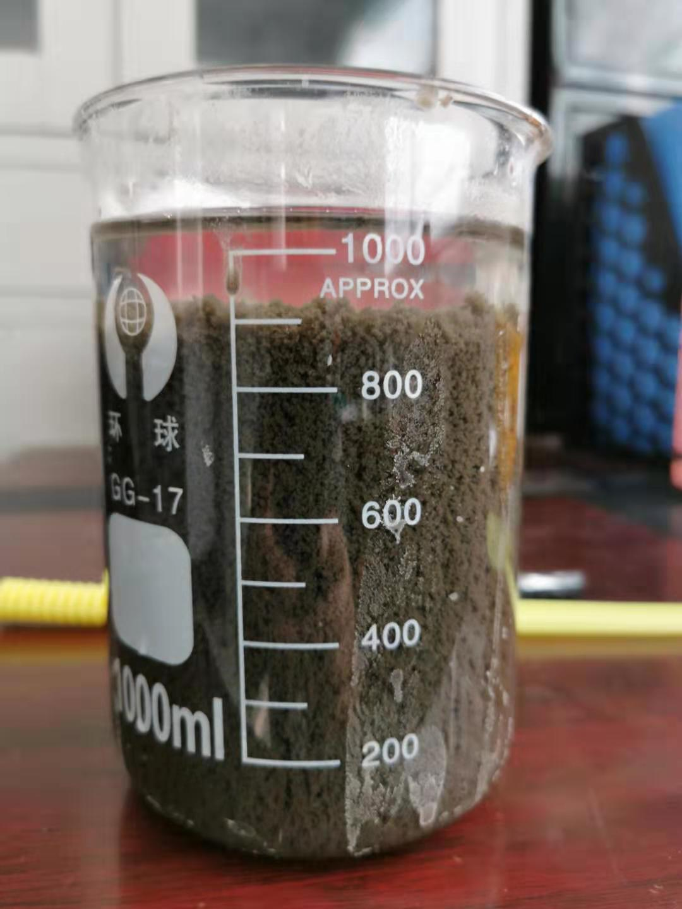

江苏某化工园区制药厂生化系统中毒，污泥沉降性能下降，出水不达标。投加100PPM半点科技的生物絮凝剂SD9001后，污泥沉降和出水水质均改善很大
半点科技生物絮凝剂SD9001帮助改善污泥沉降
江苏某化工园区制药厂生化系统中毒，污泥沉降性能下降，出水不达标。投加100PPM半点科技的生物絮凝剂SD9001后，污泥沉降和出水水质均改善很大。保证了达标排放，正常的生产计划未受影响。同时配合运营调整和补加诺维信的生物增效剂，成功的修复了生化系统，恢复并提高了系统处理COD和氨氮的能力，为进一步的生产扩容提供了空间。
SD9001生物絮凝剂SD9001以聚二甲基二烯丙基氯化铵为基础复配的混合物，对细菌无毒并可以生物降解，不会影响活性污泥的生化性能。通常用于污泥沉降差是紧急处理用，一般投加在二沉池的入口，要保证和污水充分混合。因为是物理化学反应，加药即见效。
建议投加量在100-200PPM。具体投加量需要根据实验室评估结果确定。
实验室评估结果参阅下图：
添加SD9001前，污泥沉降性能差

添加生物絮凝剂SD9001沉降明显改善

半点科技(苏州)有限公司专业从事环境保护，依托丹麦诺维信全球领先的生物增效技术，和其他多种高度集成的污水处理设备，利用化学和微生物等手段帮助提高和改善系统的COD、BOD、氨氮、总氮去除效率，除臭，污泥减量等，成为客户解决水、气、泥治理的技术服务商和产品供应商。